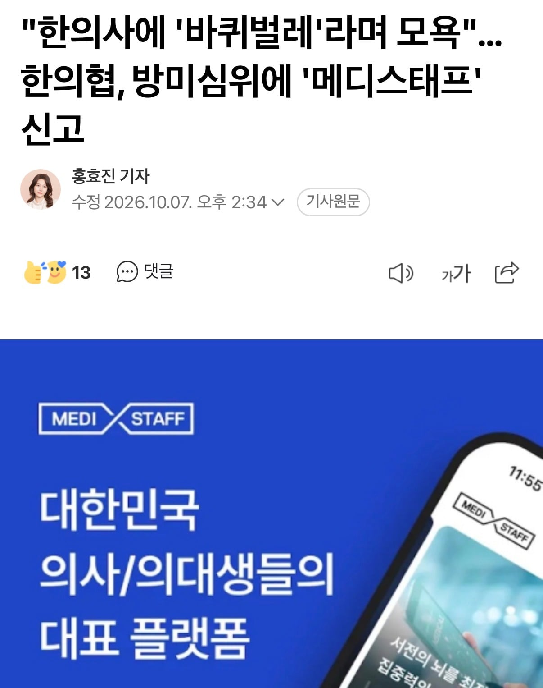
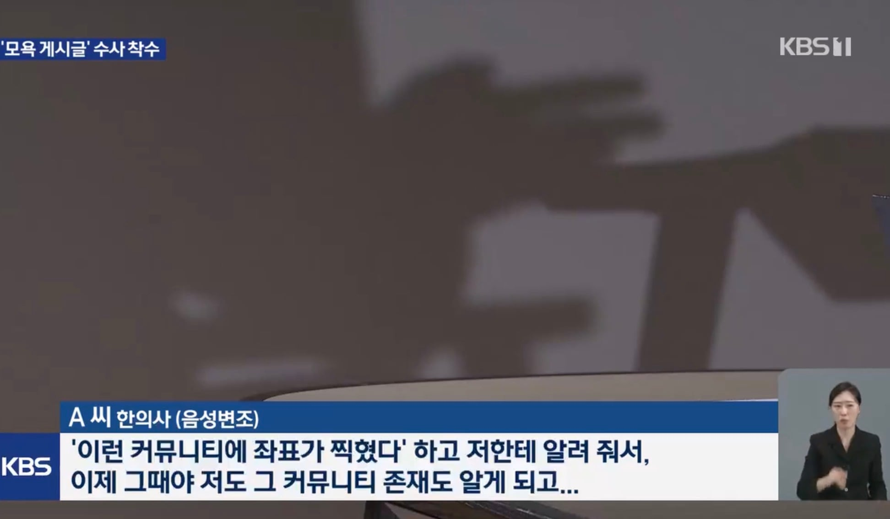
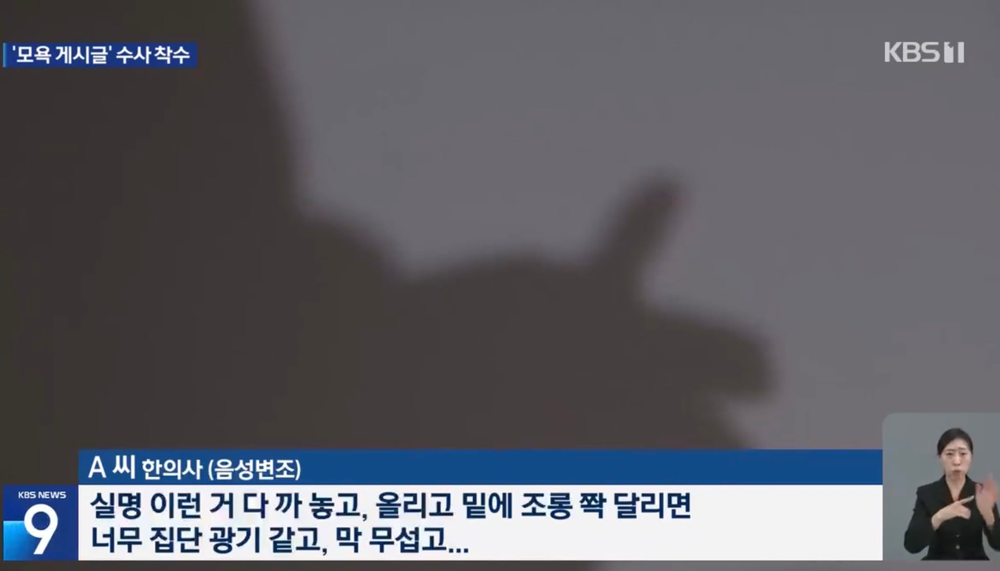
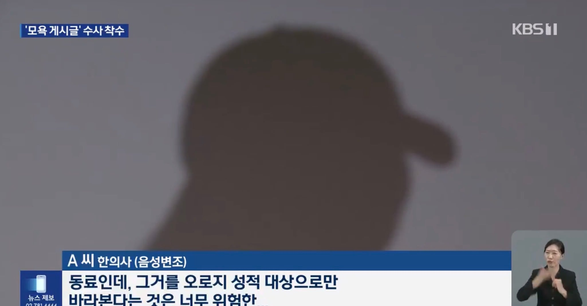

뭐 된거 맞음 의사 되기만하면 돈 많이줘 선생님 소리 들어 사고터지면 비싼 변호사 사서 무마 시키고 얼마나 세상이 쉽겠음 이렇게 된거? 의사들 탓이 아님 우리 모두가 자식은 의사 시켜야한다고 모두가 한마음 한뜻으로 만든 결과임
엄빠가 의사만 되면 느그 하고싶은거 다해도된다고 했을테니 그러니 오만하고 병신같은 의사들이 넘치지
좆같아도 국가보다 위에 있는게 대한민국 의룡인임 그게 이나라 현실임
국민성이 미개한 병신들 밖에 없으니 의사를 신처럼 모시니까 이 꼴 나지
(물론 돈도 안되고 더럽게 힘들고 온갖 소송에 휘말리는 진짜로 사람 살리는 핵심 의료 행위를 하시는 의사 선생님들은 존중 해줘야 한다고 생각함)
벌금 50만원이나 받으면 다행 ㅋ
지들 불리하면 한의사들까지 데려와서 수치 뻥튀기 시키고 필요 없어지면 뒤에서 저러고 ㅋㅋ
의룡인들이 참 많네. 자기네들이 뭐 된 줄 아나봐.